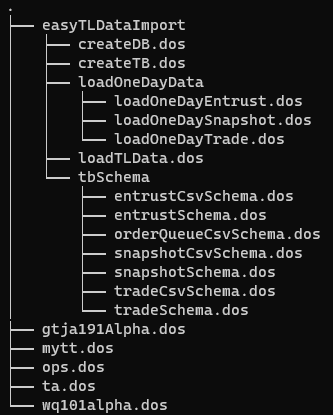

DolphinDB 脚本工程化管理：模块代码版本与权限管理
在 DolphinDB 脚本开发过程中，为了提升代码复用性和组织性，我们可以创建可复用的模块来封装自定义函数。这些模块允许我们按照目录树结构将大量函数进行有序分类和存储。然而，DolphinDB 模块功能在权限管理和代码部署方面存在一些限制，比如模块本身并不支持权限管理。为了克服这些不便，本教程将介绍一种结合 GitLab 和 DolphinDB 函数视图的方法。通过这种方法，我们不仅可以实现函数的权限管理，还能利用 Git 进行代码的版本控制和协作开发。
本教程同时面向运维人员与业务人员，运维人员更多地关注第 2-3 章，业务人员更多地关注第 4-5 章。本教程假设用户已拥有了 Gitlab 代码仓库，且有一定的 Gitlab 与 Git 命令使用基础。本教程适用于 DolphinDB Server 2.00.11.5 及以上版本。
1 基础知识简介
本节将概述 DolphinDB 脚本开发中的基本概念和工具，包括模块和函数视图的定义和使用特点。这些概念对于开发和管理 DolphinDB 系统中的可复用代码和复杂查询逻辑十分重要。
1.1 模块
在使用 DolphinDB 脚本进行业务开发时，可以创建可复用模块（module），方便开发者使用。从名称来看，一个模块是后缀为 .dos 的文件；从内容来看，一个模块包含一个或多个自定义函数。
在开发人员使用模块时，有以下特点：
- 需要通过 DolphinDB GUI 或 VSCode Extension 客户端工具，将模块上传至 DolphinDB Server 指定目录。
- 不同数据节点或计算节点的模块是独立维护的。
- 模块本身不具有权限管理功能。
以上是与本教程有关的一些关键特点。更多关于模块的详细描述，请参考官网教程 DolphinDB 模块。
1.2 函数视图
函数视图（Function View）是数据库系统中的一种视图，主要用于定义复杂的查询和计算逻辑，通过 SQL 语句或内置函数生成计算结果。
在开发人员使用函数视图时，有以下特点：
- 通过任意客户端工具连接 DolphinDB Server 后，调用添加函数视图的接口即可添加，并且具有用户或用户组级别的权限管理功能。
- 函数视图序列化在控制节点，多个控制节点之间会自动同步。
- 函数视图具有用户或用户组级别权限管理的功能。
以上是与本教程有关的一些关键特点。更多关于函数视图的详细描述，请参考官网教程 DolphinDB 函数视图。
2 方案介绍
本节将介绍 DolphinDB 脚本管理过程中遇到的问题的解决方案。首先，我们将讨论当前问题的背景和原因，然后结合函数视图、模块和 GitLab 代码仓库给出解决这些问题的方法。
2.1 方案提出的背景
某公司以 DolphinDB 为技术基础，搭建了量化投研平台，为多个业务团队提供数据与计算服务。初期，业务团队选择使用模块进行业务开发，但随着业务团队和模块数量的增加，出现了一些问题：
- 尽管初期规划了不同业务团队使用不同的模块子目录，但仍有业务人员误将模块上传至其他团队子目录，导致混乱，并且同名模块会直接覆盖，影响其他团队的正常使用。
- 业务人员可以调用其他团队的模块，存在代码安全风险。
- 不同数据节点或计算节点的模块是独立维护的，如果需要在多个节点使用相同模块，需要联系运维人员进行拷贝操作。
- 业务人员重新上传模块后，需要联系运维人员清除旧的缓存，才能使用更新后的模块。
这些问题给业务人员和运维人员都造成了困扰。在这种背景下，如何有效解决这些问题，同时更好地为业务赋能、减轻运维负担，显得尤为重要。
2.2 方案设计
函数视图可以解决权限问题，也可以避免运维人员操作的麻烦，并且我们保留了模块作为中间桥梁，通过目录树结构进行有序分类存储和便捷的版本管理，这样创建的函数视图也更有层次性、组织性。与此同时，引入 GitLab 代码仓库，通过三者的有机结合，解决上述问题。
整个方案的技术框架如下图：

图2-1 模块代码版本与权限管理技术框架图
在框架图中，模块代码一键部署工具部分（绿色）为了简化业务人员使用，降低出错风险，已封装成一个函数视图（deployModuleFromGitLab）。运维人员部署该函数视图，并赋予业务人员执行权限。业务人员调用该函数视图，即可对 GitLab 中的模块代码进行一键部署。
3 一键部署工具初始化
本节将介绍如何初始化一键部署工具，确保所有依赖环境和配置到位，以便后续顺利使用。
3.1 依赖的环境与配置
依赖一：httpClient 插件
该插件非 server 安装包自带，须手动安装。在线安装方式如下：
login(`admin, yourAdminPwd) // 登录管理员账号
installPlugin("httpClient") // 通过插件市场安装在线安装也可以通过插件市场手动下载并上传至服务器。
依赖二：zip 插件
该插件 server 安装包自带，无须安装。
依赖三：配置 httpClient、zip 插件节点启动预加载
如果为集群模式，控制节点、数据节点、计算节点均需配置：
preloadModules=plugins::httpClient,plugins::zip依赖四：允许管理员调用 shell 函数
所有节点均需配置：
enableShellFunction=true3.2 deployModuleFromGitLab 部署
在附件 gitModules.dos 文件中，更改您的管理员账号的登录密码，并全选执行，即可注册 deployModuleFromGitLab 函数视图。
我们将 deployModuleFromGitLab 的执行权限赋予 test_user 用户，同时赋予该用户添加函数视图的权限，代码如下：
login(`admin, yourAdminPwd) // 登录管理员账号
grant("test_user", VIEW_EXEC, `deployModuleFromGitLab)
grant("test_user", VIEW_OWNER)3.3 deployModuleFromGitLab 接口说明
函数语法：
deployModuleFromGitLab(gitLabSite, repoId, repoBranch, privateToken, timeout)各个参数的的含义说明如下：
| 参数名称 | 参数含义 |
|---|---|
| gitLabSite | Gitlab 代码仓库的地址 |
| repoId | Gitlab 代码仓库的 Project ID |
| repoBranch | Gitlab 代码仓库的的分支名称，例如：master、dev |
| privateToken | 个人访问令牌 |
| timeout | 连接超时时间（单位：毫秒） |
4 一键部署工具规范化使用参考案例
本章节假设 demo 模块代码已经提交至 testModules 代码仓库。
本案例中 DolphinDB 用户名称为 test_user，使用的模块代码见附件 demo.zip，demo 目录层级如下图所示。

图4-1 demo 目录层级图
首先，如果为第一次部署某仓库模块代码，需要先获取该仓库的 Project ID 与生成个人访问 Token。
获取 Project ID 的图例：

个人访问令牌可以在 User Settings → Access Tokens 中生成，如下图所示。更详细地，可以参考 Gitlab 官方 Project access tokens 。
部署模块代码为函数视图。
运行如下代码。用户使用时，需要根据注释进行修改。
login(`test_user, yourPwd)
gitLabSite = "https://dolphindb.net" // Gitlab 代码仓库的地址
repoId = 447 // Gitlab 代码仓库的 ID
repoBranch = "master" // 需要部署的分支名称
privateToken = "xxxxxxxxxxxx" // 填写实际的个人访问令牌
timeout = 1000000
deployModuleFromGitLab(gitLabSite, repoId, repoBranch, privateToken, timeout)查看部署后的结果。
如何使用以及给其他用户赋予某函数视图访问权限。
使用某函数示例：
test_user::mytt::ABS(-123)给其他用户赋权某函数使用权限：
grant(`test_user2, VIEW_EXEC, "test_user::mytt::ABS") 5 模块代码开发管理规范
为了保证一键部署工具的正常使用，制定了以下模块代码开发管理规范，规范级别均为强制。
5.1 模块定义规范
模块声明时，第一层级必须为用户名称，该用户名称为 DolphinDB 中的用户名称。
为什么要增加用户名称这样一个层级？因为模块中的每个函数最终会被添加为一个函数视图，这里的用户名称，也就是函数视图的拥有者（VIEW_OWNER）。
模块声明时使用 module 关键字，模块引用时使用 use 关键字，这两个关键字所在行的前面不能有空格。
例子：期望创建一个 ta 模块，假如用户名称为 test_user，那么模块名称为 test_user::ta
声明模块 test_user::ta 通过以下脚本实现
module test_user::ta引用模块 test_user::ta 通过以下脚本实现
use test_user::ops
5.2 模块依赖规范
模块之间可以单向引用，不支持交叉引用。
例子：
模块 test_user::ta 中的部分内容：
module test_user::ta
use test_user::ops
//此处省略了函数定义模块 test_user::ops 中的部分内容：
module test_user::ops
use test_user::mytt
//此处省略了函数定义以上代码示例中，ta 引用了 ops，ops 引用了 mytt，是一种单向引用。
5.3 文件命名规范
模块名称和所对应的 dos 文件名称必须严格一致。
例子：模块名称为 test_user::ta 所对应的 dos 文件名称必须为 ta.dos。
5.4 目录层级规范
模块名称和所对应的目录层级必须严格一致。
例子：假如 Gitlab 代码仓库名称为 testModules，那么名称为 test_user::easyTLDataImport::createDB 的模块所对应的目录层级必须为 testModules/easyTLDataImport/createDB.dos。
6 常见问题与解决方法
本节列举了一些常见问题，并给出了对应的解决方法。
错误信息 01：No access to view deployModuleFromGitLab.
原因：当前用户没有 deployModuleFromGitLab 函数视图的执行权限。
解决方法：请联系运维人员（管理员）申请权限。运维人员（管理员）赋权方法参考第3.2节。
错误信息 02：Only administrators or user with VIEW_OWNER permission can execute function addFunctionView.
原因：当前用户没有添加函数视图（VIEW_OWNER ）的权限。
原因：请联系运维人员（管理员）申请权限。运维人员（管理员）赋权方法参考第3.2节。
错误信息 03：404 Project Not Found.
原因：Gitlab 代码仓库的 Project ID 不正确。
解决方法：如何获取 Project ID，请参考第4章。
错误信息 04：401 Unauthorized.
原因：当前用户 access token 不正确。
解决方法：如何获取 access token，请参考第4章。
错误信息 05：The user name or password is incorrect.
原因：deployModuleFromGitLab 函数视图中的账号或密码不正确。
解决方法：请联系运维人员（管理员）确认deployModuleFromGitLab 函数视图中的账号密码的正确性。
错误信息 06：curl returns: Couldn't resolve host. 或者 curl returns: Failed to connect to xxx port xxx: Connection refused/No route to host.
原因：Gitlab 代码仓库域名不正确或者网络存在问题。
解决方法：请联系 IT 部门进行检查。
错误信息 07：Cannot open "xxxx.zip" as zip file.
原因：访问了错误的网站，下载了错误的文件。
解决方法：请检查 Gitlab 代码仓库域名是否正确。
错误信息 08：The input function view must be a user defined function.
原因：DolphinDB server 版本低于 2.00.11。
解决方法：请联系运维人员（管理员）升级至最新的稳定版本。
错误信息 09：Can't find module.
可能原因及对应的解决方法：
- 引用了不存在的模块名称，请引用正确的模块名称。
- 模块名称与文件名称不一致，请参考第5章更正。
- 模块名称与目录层级不一致，请参考第5章更正。
7 总结
随着 DolphinDB 作为一个平台使用的场景越来越多，业务人员所开发的代码也越来越多，如何高效、规范、安全地管理模块代码越发重要。本教程所介绍的模块代码版本与权限管理方案，是深入了解客户代码开发场景后的沉淀，具有较深的工程化意义。